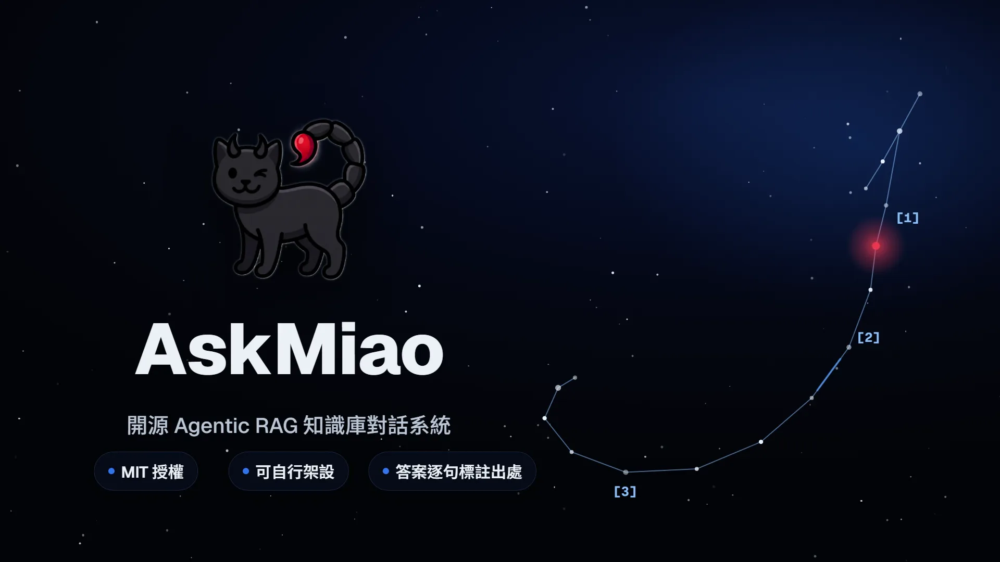

企業知識庫問答系統 答案逐句附出處
AskMiao 先查證再回答：混合檢索內部文件，必要時上網查證，每個論點以 [n] 對回原文段落或網頁；知識庫查不到，就照實說。
- MIT開源授權，可自行架設
- 5家模型供應商，皆可呼叫工具
- 28種文件格式，掃描 PDF 可 OCR
- 300秒內未核准的工具呼叫視為拒絕
公司密碼多久要換一次？跟 NIST 最新建議一致嗎？
研究過程 · 3 個步驟 · 9.49 秒
結論：NIST SP 800-63B-4 已不要求定期更換密碼，只有出現外洩跡象時才強制更換[1]。公司《資訊安全管理政策 v3.2》仍規定一般帳號每 90 天、特權帳號每 60 天更換[2][3]，兩者確實不同。
| 項目 | 公司政策 v3.2 | NIST SP 800-63B-4 |
|---|---|---|
| 定期更換 | 一般 90 天、特權 60 天[2][3] | 不要求，有外洩跡象才更換[1] |
| 登入失敗 | 連續 5 次鎖定 30 分鐘[4] | 須限制連續失敗次數[1] |
支援的模型供應商與開源元件
- OpenAI
- Anthropic Claude
- Google Gemini
- Microsoft Foundry
- Ollama
- Model Context Protocol
- Hugging Face
- FastAPI
- Python
- React
- TypeScript
- Vite
- Bun
- PostgreSQL
- SQLite
- LangChain
- DuckDuckGo
介紹影片
75 秒看一個問題怎麼被查證
提問、自主研究、逐句標註出處、工具核准與安全防護，一次看完。畫面取自實際執行的 AskMiao，回答由本機 Ollama 模型產生。

影片文字稿
- 0:00AskMiao，開源的 Agentic RAG 知識庫對話系統。
- 0:06AI 回答很快，但你敢直接拿去用嗎？AskMiao 讓每句結論都對得回原文。
- 0:12提問：「下個月去東京出差，住宿和膳雜費上限各是多少？」Agent 先啟用 travel-checklist 技能，再檢索內部知識庫。
- 0:18答案逐句標上 [n]：出發前 14 個工作日 [2]、每晚上限 5,500 元 [3]、每日美金 50 至 80 元 [1]。
- 0:24點開 [1]，看到原文段落與相關度。
- 0:30FAISS 向量與 BM25 兩軌檢索，以 RRF 依名次融合，Cross-Encoder 重排後只把過門檻的段落交給 Agent。
- 0:36會改動外部系統的工具，執行前先問過你；按下拒絕，請求就不會送出。
- 0:426.0.0 新功能：Agent Skills，輸入 / 叫出專業做法；MCP 支援 Streamable HTTP 與 OAuth，OpenAPI 匯入一併帶上認證。
- 0:48每個出站請求都要過九道檢查，另有登入失敗節流、改密碼即撤銷權杖與工具憑證加密存放。
- 0:54五家模型共用一層介面；影片裡的回答都由本機 Ollama 的 nemotron-3.5-bolt 產生。
- 1:00自主研究，答案有出處。github.com/Scorpio-meow/AskMiao，MIT 授權。
運作方式
從提問到有出處的答案，四個步驟
Agent 自己決定要查知識庫、統計記錄、上網搜尋或呼叫 API，每一步都記在研究過程裡；會改動外部系統的工具，執行前先問你。
-
01
提問，可以附上圖片與檔案
每則訊息最多 5 個附件，單檔 15 MiB；圖片交給視覺模型，文字類附件抽取內容併入提問。推理深度有六個檔位，模型不支援的檔位會停用。
- 無 (None)
- 輕度 (Low)
- 標準 (Medium)
- 深度 (High)
- 極致 (X-High)
- 最大 (Max)此模型不支援
11 月排班表.png248 KB幫我請 11/20、11/21 兩天特休，順便提醒我請假規定。
-
02
Agent 自己決定查哪裡
ReAct 迴圈以原生工具呼叫多輪蒐集資料：檢索知識庫、精確統計記錄、上網搜尋、閱讀網頁，或呼叫管理員匯入的 API。每一步的參數、結果與耗時即時串流到畫面上。
研究中：hr_create_leave（步驟 3）
-
檢索內部知識庫0.84 秒
特休 申請 期限 簽核3 段通過相關性門檻 -
hr_leave_balance0.42 秒
GET hr.example.com/v1/employees/E1042/leave-balance{"annual_remaining_days": 9} -
hr_create_leave暫停中
POST hr.example.com/v1/leave-requests暫停，等待發問者核准
-
-
03
會改動資料的工具，先問過你
POST、PUT、DELETE 等方法的 API 工具與 MCP 伺服器預設需要核准。只有發問者能按下核准，300 秒沒有回應就當成拒絕。按下卡片上的按鈕試試看。
AI 想執行外部工具，需要你確認
- employee_id
- E1042
- leave_type
- annual
- start_date
- 2026-11-20
- end_date
- 2026-11-21
此工具可能會修改外部系統的資料。請逐一確認每個參數與送出位置再核准；未回應會在 5:00 後視為拒絕。
- step_start{"step": 3, "tool": "hr_create_leave"}
- approval_required{"approval_id": "q3VxT0bL8mYc…", "target": "POST hr.example.com/v1/leave-requests"}
-
04
每個 [n] 都對得回原文
每次提問建立一張引用編號表，知識庫片段與網頁第一次出現時配號。來源只列實際被引用的條目，對不到來源的編號在送出前就移除。
已送出 11/20 至 11/21 的特休申請，單號 LR-20261120-0418。特休須在假期開始前三個工作天提出，送出後由直屬主管簽核；主管三個工作天內未簽核，會自動轉給部門經理。
參考來源 1員工請假辦法.pdf段落 4 2員工請假辦法.pdf段落 7 3簽核作業要點.docx段落 2員工請假辦法.pdf段落 4 · 相關度 0.97
特別休假應於休假開始前三個工作天，經人資系統提出申請；未依期限提出者，得由主管退回。
員工請假辦法.pdf段落 7 · 相關度 0.91
請假申請送出後，由直屬主管於系統簽核，簽核結果以電子郵件通知申請人。
簽核作業要點.docx段落 2 · 相關度 0.84
簽核人逾三個工作天未處理者，系統自動轉呈上一層主管。
混合檢索
兩軌檢索，依名次融合，重排機率把關
向量與 BM25 每次都跑，以 RRF 依名次融合，再由 Cross-Encoder 重排。重排機率低於門檻的片段一律濾除，全部沒過就回報查無資料，不拿無關片段硬答。
- 提問
-
- 向量檢索FAISS · bge-small-zh
- BM25jieba 詞＋漢字單字與雙字
- 精確比對網址、貼文 ID、日期、@帳號
- RRF 融合Σ 1 / (RRF_K + 名次)
- Cross-Encoder 重排bge-reranker-base，可用 OpenVINO GPU
- 相關性門檻≥ RERANK_RELEVANCE_THRESHOLD
向量前 5 名
BM25 前 5 名
融合後重排重排機率，對數刻度
-
候選召回
1.000
原本 0.971。BM25 加入漢字單字與雙字欄位後，重排前的候選已涵蓋內建基準的所有正解。
-
nDCG@5
0.907
原本 0.898。內建基準 12 份企業文件與《大眾捷運法》，103 個正例、15 個反例。
-
OpenVINO 重排，10 筆候選
0.51秒
原本 2.83 秒。依實際候選數送出，Intel Core Ultra 7 155U 內顯實測，前 1 名與門檻判定和 PyTorch 相同。
功能
接得上公司既有的模型、文件與系統
各帳號用自己的模型連線，管理員匯入 API 與 MCP 伺服器、上傳技能，Agent 每次提問時依需要取用。
-
Agent Skills：用得上才載入的做法
上傳 SKILL.md 或技能 zip，模型平時只看名稱與描述，用得上才載入內文。也能在訊息開頭輸入 /技能名稱 直接指定。
/tra
-
五家供應商，各帳號自己的連線
五家都能呼叫工具與串流。管理員可開放共用連線，並替文件摘要與 OCR 指定系統模型。
- OpenAI
- Anthropic Claude
- Google Gemini
- Microsoft Foundry
- Ollama（本機）
-
匯入 OpenAPI，連工作流程一起
支援 Swagger 2.0、OpenAPI 3.0～3.2 與 Arazzo 1.0／1.1 工作流程，匯入前可先套用 Overlay。
- GET/v1/employees/{id}/leave-balance
- POST/v1/leave-requests需要核准
- QUERY/v1/leave-requests
- Arazzoapply-and-notify3 步
-
MCP 2026-07-28 與 OAuth
以 server/discover 協商無狀態協定，舊版伺服器自動退回交握；OAuth 比對 iss 並強制 PKCE。
MCP-Protocol-Version: 2026-07-28 Mcp-Method: tools/call Mcp-Name: get_current_time readOnlyHint: true · destructiveHint: false
-
28 種格式，掃描 PDF 也讀得到
PDF 先補齊字型的字元對應再擷取，沒有文字層的頁面交給管理員指定的 OCR 模型；JSON、CSV、XLSX 逐筆成為片段。
- .docx
- .pptx
- .xlsx
- .csv
- .json
- .jsonl
- .yaml
- .md
- .html
- .sql
- .py
- ＋16
-
一個請求 ID，串起所有紀錄
X-Request-ID 寫在回應標頭、該請求的每一行日誌、security.log 與串流的 error 事件。紀錄不含密碼、權杖、Cookie 與對話內容。
10:42:07 INFO [a3f9c2e1] POST /api/chat/send 200 · 9.61 s 10:42:07 INFO [a3f9c2e1] llm gpt-5 ok · first token 1.12 s · 2,184 tokens 10:42:08 INFO [a3f9c2e1] tool search_knowledge_base ok · 0.84 s 10:42:09 INFO [a3f9c2e1] retrieval query_chars=12 passed=3
安全
三輪安全稽核，防護是預設路徑
工具結果一律當成不可信資料，web_fetch 只讀使用者訊息或本次工具結果中原樣出現過的網址，出站請求逐跳驗證並把連線固定在核可的 IP。
- 協定只允許 http、https
- 帳號密碼網址不得含帳號密碼
- 連接埠擋下資料庫、快取與遠端管理服務
- 主機名稱擋下保留名稱與內部網域後綴
- IP 網段擋下私有、迴環、連結本地與保留網段
- DNS 與固定 IP伺服器端執行
- 逐跳轉址伺服器端執行
權杖對應資料庫帳號
RSA-2048 簽署 JWT，每次請求都以帳號目前的狀態與權限為準；變更密碼或停用帳號，先前的權杖一律失效。
登入失敗節流
Argon2 雜湊密碼；同一帳號或來源位址失敗達門檻就暫停登入，回傳 429 與 Retry-After。
工具憑證加密存放
API 工具與 MCP 的標頭、金鑰以 Fernet 加密寫入資料庫，管理 API 只回 ••••••••。
工具結果是不可信資料
每次提問以不同 id 的 untrusted_tool_result 標記包住結果，文件或網頁夾帶的指令不會被執行。
每個入口都有上限
單則訊息 20,000 字、附件 5 個、每人同時 2 個回答串流，超過就回 413、422 或 429。
錯誤只回代碼
未預期的例外只對外回隨機錯誤代碼，堆疊寫進伺服器日誌；日誌雙層遮蔽，權杖顯示為 [REDACTED]。
快速開始
三個步驟，在本機跑起來
需要 Python 3.12 以上與 Bun 1.x；預設用 SQLite，不需另裝資料庫。首次啟動會下載約 1.2 GB 的嵌入與重排模型。
-
1
取得原始碼
git clone https://github.com/Scorpio-meow/AskMiao.git cd AskMiao -
2
設定並啟動後端
cd backend python -m venv .venv source .venv/bin/activate pip install -r requirements.txt cp .env.example .env python main.py啟動前在
.env把DATABASE_URL改成sqlite:///./chatbot.db，並換上自己產生的TOOL_SECRETS_KEY。 -
3
啟動前端，建立管理員
cd frontend bun install bun run dev在
backend/執行python scripts/create_user.py --username admin --email admin@example.com --admin，再開啟http://localhost:3000登入。
版本
各版本的重點
不相容的變更都升主版號，升級步驟寫在升級指南；每個版本的完整變更記在變更紀錄。
-
8.2.0最新
Agent Skills 可以直接上傳資料夾，一次安裝其中所有技能；技能上傳拒絕含冒號的路徑，安裝時不再拖慢其他人的對話。
-
8.0.0
系統模型、OpenAPI 3.2 與 Arazzo、BM25 漢字單字與雙字欄位、請求 ID 與詳細日誌、聊天與 AI 工具頁重新設計。
-
7.0.0
各帳號的 API 連線與共用連線、使用者管理、聯網白名單逐跳檢查。
-
6.0.0
Agent Skills、MCP Streamable HTTP 與 OAuth、Microsoft Foundry，推理深度對應五家供應商。
-
5.0.0
第二輪安全稽核：登入節流、變更密碼撤銷權杖、工具憑證加密、相依套件雜湊鎖定。
-
4.0.0
安全稽核：權杖綁定資料庫帳號、工具呼叫需要核准、出站連線固定 IP、資源上限。
-
3.0.0
chunk_id 索引、RRF 與相關性門檻、答案引用出處、工具信任邊界。
-
2.x
Agentic RAG 自主研究、多模態對話與文件摘要、自訂 API 工具與 MCP、集中式 SSRF 防護。
-
1.0.0
混合 RAG 與安全基礎。